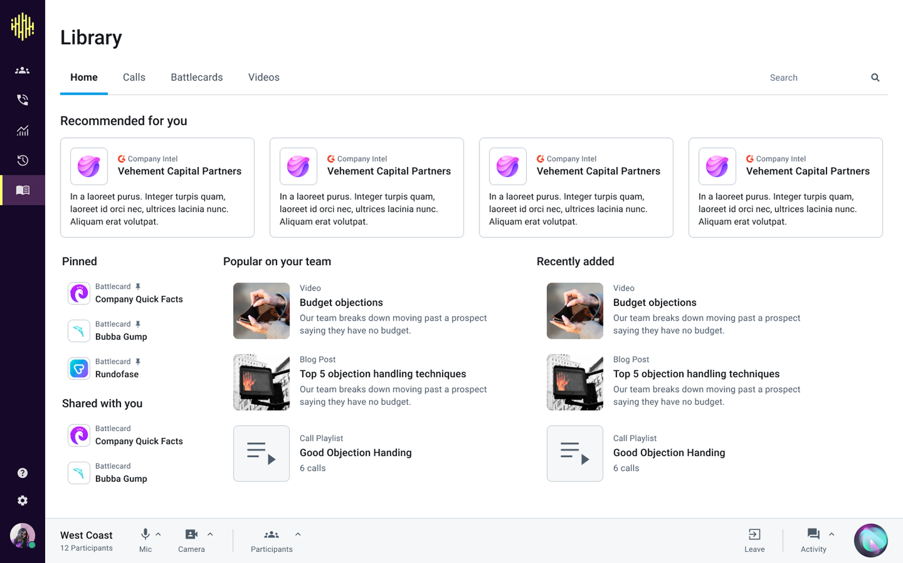

Orum
Battlecards and AI Assist
Team Objective
One of the main goals at Orum is to enable sales reps to book more meetings. While the automated dialer helps them connect with more prospects, we want to help them perform better on the calls as well. Currently, this is largely done through coaching from the Sales Manager.
We also want to become an indispensible tool for managers, as they're a key decision maker in the adoption of Orum. If they're using Orum to manage their reps, they'll be more likely to renew.
User Research
With coaching being our new initiative, I conducted a general research project where I interviewed a dozen SDR managers to learn all about their role and how they coach their teams. I found that there's 3 key aspects to coaching a team of SDRs:

One aspect to a sales manager role is providing resources to the team to help them succeed, such as scripts and battlecards about competitors and how to handle objections. However, reps are struggling to access these resources during the calls. They live outside Orum, and it can be difficult to pull them up while talking. One manager showed us around the office, and we saw that reps have battlecards printed off and taped all around their desks.
I compiled the research into a deck. The section relevant to this project, enablement resources, is below.
Problem
Battlecards are a helpful tool, but are underutilized since they're difficult to find and pull up during a call.
Solution
Build a place for battlecards to live in Orum, and use AI to suggest relevant battlecards at the right time. This way, battlecards don't need to be stored in a different platform, and sales reps don't need to scramble to find them during a call.
Phase 1: Bring battlecards into Orum
The most crucial problem we heard was that battlecards are living in other places, like Google Drive, and it would be much easier if they can live and be accessed within Orum.
The Library
First, we need a place for battlecards to be authored, as well as to live when a user isn't dialing. Reps may want to familiarize themselves with battlecards and study them before making calls.
We already built the Call Library, and had a vision of extending it to host all resources.

I decided to stick with that vision and rebranded the Call Library into the Library, and added Battlecards to the navigation. Similar to the Call Library, a list of battlecards is viewed in a table. From talking to users, we determined it was critical to have a way to group the cards. Typically sales teams will have several battlecards for different competitors or prospect job titles.
The battlecards can be viewed in a side panel, consistent with the Call Library pattern.
When authoring the battlecard, the user can select or create a group, and is given basic text editing tools.
Battlecards in the Dialer
After exploring many ways to display them, I landed on having a side navigation with the battlecard in focus on the right. I wanted to prioritize the battlecard so the rep can easily refer to it on the call. We also don't anticipate there being a lot of battlecards, so I prioritized ease of access, figuring it's better to display a card by default rather than forcing the user to navigate. This is also scalable for when we automatically surface battlecards using AI.
We got feedback from users that it still needed to be quicker to find the right battlecard, so we added a search field, as well as the ability to pin battlecards to appear at the top of the list and by default when they switch to the battlecard tab.
Phase 2: Help users author battlecards
The first phase worked great for sales managers who already had battlecards created. All they had to do was copy and paste the content in, and now it lives in Orum. However, many sales managers do not have the time to create this content, or are not experienced enough to have these resources for the team.
Problem: Users find it time consuming and overwhelming to author battlecards. How can we help managers create resources to help their teams be more successful?
Solutions explored: Our two main ideas were to provide the users with templates that they could fill out, or to have AI assist them with writing. We decided to go with the AI solution, as it would provide more flexibility and help the users with the writing itself.
Write with AI
I added a button called "Write with AI" to the content creation input field.
When clicked, an input opens, where the user can describe what they need to write. The content field will then populate with the AI-generated battlecard, and the user can edit from there.
Improve with AI
We also wanted to provide the user with the ability to improve what they've already written with AI. So, when the user has content in the field, the button changes to say "Improve with AI", and the user can then describe how they want to improve it.
I didn't want to override what the user had written, so opted for a field that shows the existing content next to the suggested content, and the user can opt to keep the original or apply the changes. I explored the ability to provide feedback, or iterate in a conversational way, but decided this would drastically increase scope.
Phase 3: Suggest battlecards using AI
Now that the battlecards are created and hosted in Orum, we want to help reps access and use them more quickly. We already have a lot of AI analysis happening on calls to detect objections, and it would be great to expand this for battlecard purposes. If a competitor is mentioned on a call, AI can suggest a battlecard to use.
It was crucial that the AI suggestion be visible, but not annoying. The user shouldn't be forced to look at it, in case the suggestion isn't helpful, or they'd rather use a different battlecard. So, I opted for a clickable suggestion at the top of the nav. If users aren't on the battlecard tab, a little toast pops up notifying them of the suggestion, as well as an animated icon next to the battlecard tab. We also added a field in the create modal for users to input common phrases to listen for when they'd expect the battlecard to appear.
Summary
This 3 phase solution solved many problems:
- Migrated battlecards into Orum. While helping users, this also helps the business by making Orum a more all-encompassing sales platform. If sales teams have their resources in Orum, it makes the product more sticky and more of a necessity.
- Helped sales managers author battlecards. By making this easier for managers, this helps their team be equipped with the resources they need to sell more effectively. This should lead to improved performance of sales reps.
- Surfaced battlecards quicker to reps both by having them in the dialer, and by having AI Assist. This way, reps are more likely to use the battlecards, and they don't have to scramble to find them while talking to a prospect.
Overall, a lot of exploration of various ideas, layouts, and navigations were explored during this design process. Contact me to see more!